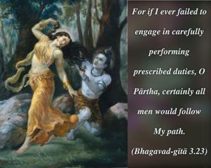

For if I ever failed to engage in carefully performing prescribed duties, O Pārtha, certainly all men would follow My path.

In order to keep the balance of social tranquillity for progress in spiritual life, there are traditional family usages meant for every civilized man. Although such rules and regulations are for the conditioned souls and not Lord Kṛṣṇa, because He descended to establish the principles of religion He followed the prescribed rules. Otherwise, common men would follow in His footsteps, because He is the greatest authority. From the Śrīmad-Bhāgavatam it is understood that Lord Kṛṣṇa was performing all the religious duties at home and out of home, as required of a householder.